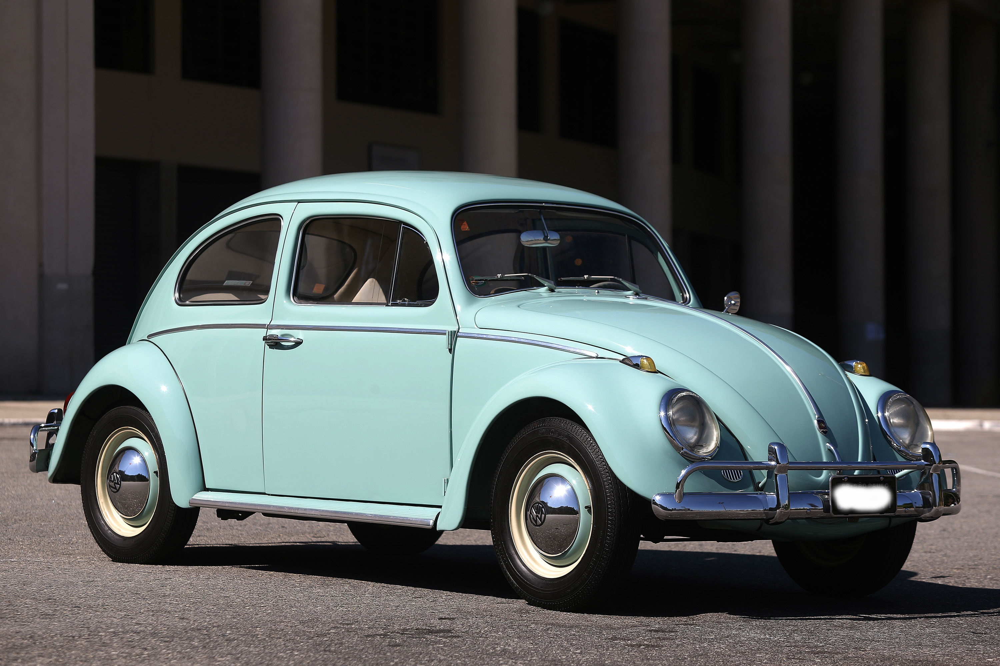
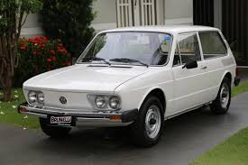
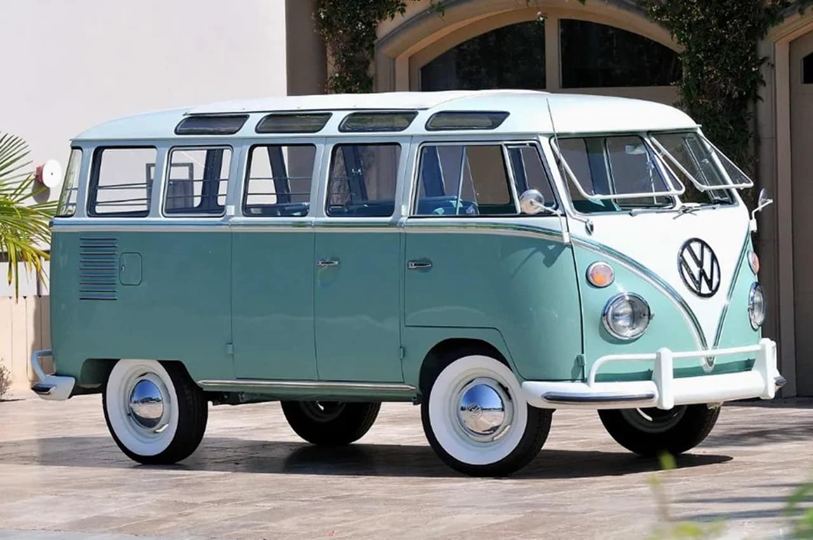

Considerados por antigomobilistas como dois dos modelos mais belos da história da Volkswagen, o SP1 (motor 1.6) e o SP2 (motor 1.7) foram inteiramente projetados, desenvolvidos e produzidos no Brasil – o desenho foi assinado pelo célebre designer automobilístico Marcio Piancastelli.

O Volkswagen Brasília é um automóvel produzido desde 1973 até 1982 pela Volkswagen do Brasil.
Definido internamente como modelo/tipo "102", foi projetado para aliar a robustez do Volkswagen Fusca, um carro consagrado no mercado, com o conforto de um automóvel com maior espaço interno e desenho mais contemporâneo.
Era um carro pequeno, de linhas retas e grande área envidraçada. Esse nome é uma homenagem à então moderníssima cidade, fundada 13 anos antes com o mesmo nome. Foi o segundo carro mais vendido do Brasil de 1974 a 1979, ficando atrás apenas do Volkswagen Fusca.

Ao lado do Fusca, a Kombi marcou o início das atividades da Volkswagen no País, há 60 anos. Sua montagem começou no ano de 1953, em um galpão no bairro do Ipiranga, em São Paulo.
A Kombi foi fabricada até agosto de 2013. Para celebrar sua despedida foi lançada a versão especial Last Edition (1.200 unidades produzidas).
